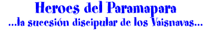
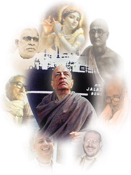

·
Srila Bhaktivinoda Thakura.
· Srila Gourkisora Das Babaji Maharaja.
· Srila Bhaktisiddhanta Saraswati Thakura.
· Srila A. C. Bhaktivedanta Swami Prabhupada.
· Srila Bhakti Raksaka Sridhara Deva Goswami Maharaja.
· Srila Bhakti Promode Puri Goswami .Maharaja.
y muchos otros mas pero esta...